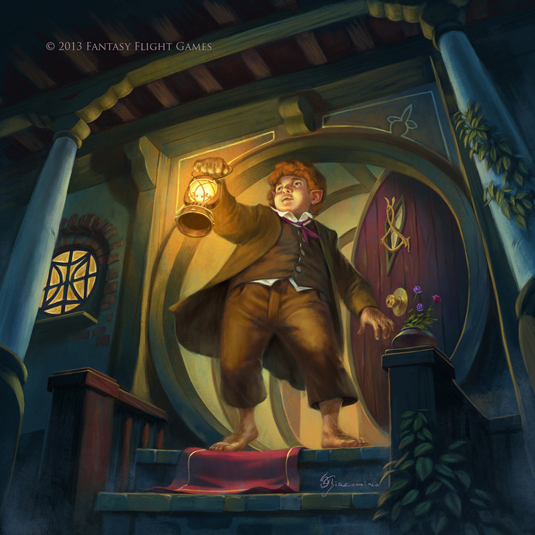
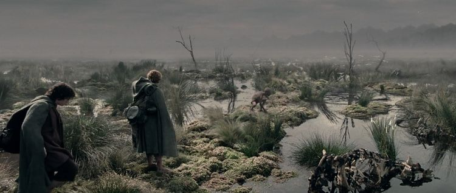
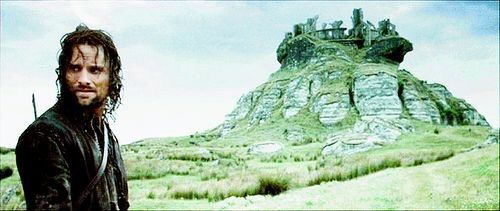
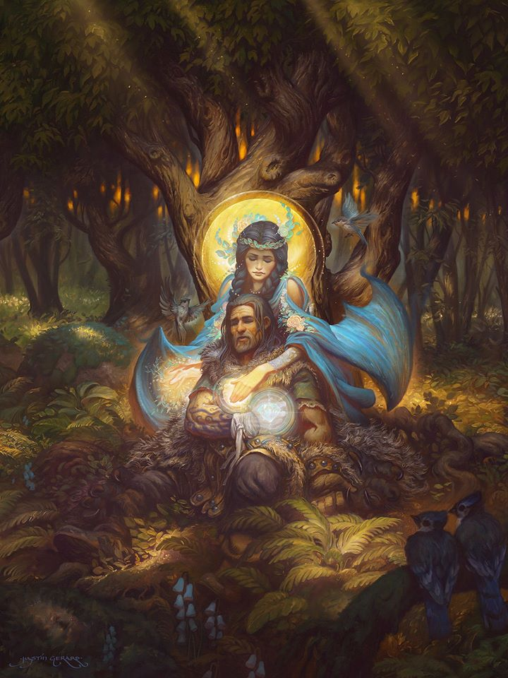
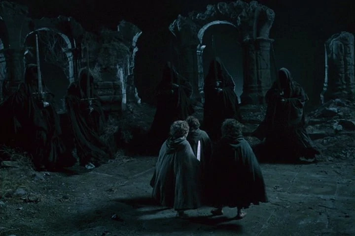
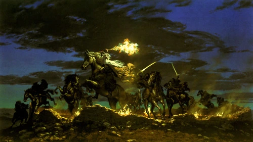

A Knife in the Dark
Ooh, who’s getting shanked? I know it’s Pippin. He’s been too carefree singing and he’s gonna get what’s coming to him from a local barkeep tired of his tunes.
Hey, it’s Fatty Bolger (his actual name in the book, I’m not making fun of this guy). I thought he was so unimportant, that I didn’t even mention him in one of the earlier chapters. Any-who he helped our 4 other hobbits get prepared to set off from Buckland to Bree. It appears our portly pal is about to get an unwelcome visit from three black riders.
“Open, in the name of Mordor!” said a voice thin and menacing (said by a black rider). Oh goodness, the heinous and root of all evil in Middle earth are respecting the knock and announce rule and abiding by the fourth amendment: protection against unreasonable search and seizure. Oh boy, the black riders of Sauron are doing better in some aspects than some of our cops.
After the warning, the shadowy figures knock down the door and entered the little hobbit home. I guess Sauron gave them a warrant. Oh no, this is it, isn’t it. Our Fatty Bolger is gonna get turned into swiss cheese by MEPD.
Sike. Fatty Bolger, or should I call him Fast & Furious Bolger gave the riders the slip and was spriting well into town by the time they barged into his home. He alerted the residents of Buckland of the intruders and the Brandybucks sounded the Horn-call of Buckland, an alarm horn that had not been sounded in centuries. “AWAKE! FEAR! FIRE! FOES! AWAKE!” Wow, they really covered their bases with all possible threats that start with the letter F.
These black riders were described as mysterious and ominous in the first few chapters. Now these guys are fumbling and bumbling about trying to flee the scene. One of them tossed the hobbit cloak he was inspecting and ran to his horse and flee. And flee they did , these three riders, or three stooges should we call them, were more bark than bite. At the sound of the hobbit horns they ran. Oh no, here comes a small band of three feet tall people coming to drive us out!
If the riders didn’t leave with their pride, they at least left knowing the ring was no longer in the Shire and they would inform Sauron.
Does Aragorn sleep with his eyes open? Or is my reading comprehension that bad, because Tolkien made it seem that way in the passage I’m reading right now.
They are ready to leave at sunrise but to their dismay, their ponies and all the ponies in the stable are gone! With no other choice, the gang must walk all the way to Rivendell.
No pony in town could be gotten, except one. Bill Ferny’s underfed and poorly treated pony. The same Bill Ferny that ratted Frodo out the night he accidentally slipped on the ring. And Ol’ Bill was selling his pony for three times its value! Bill Phony’s a real piece of work.
Mr. Butterbur took care of the cost himself and have a little extra for our hobbits for the journey. I’m sorry I doubted you, Bill. You’re a real G.
On the way out of Bree, leaving on the main road, Sam spots Bill Fugly and throws an apple at his face. Bullseye.
After a while on the main road, Aragorn leads our hobbits off the beaten path - a shortcut that will allow the group to avoid a great curved loop the road would’ve taken them, but instead straight to the other side through the Midgewater Marshes; a most unpleasant prospect.
Midgewater. I’m learning now from google that midges are small flies and mosquitoes. Our hobbits are being feasted on like no other, biting when they try to eat, sleep, and walk. Forget Sauron, I’ve identified the true lurking evil of Middle earth and it lives here in this bog.
Our boys see a strange flashing light in the far far distance but can’t make out what it is. Maybe this will be important later.
Sam sings a song about old lore: Gil-galad, an elf king that rode away and was not heard of again.
Aragorn does not like it when the hobbits speak of certain things like saying wraiths and Mordor.
They arrive at Weathertop, its center was a circle of broken stones and a pile of scorched bones like a landmark amongst the hills. They were hoping to meet Gandalf here.
They find a rune-marked stone likely etched by Gandalf. Aragorn surmises that the light they so before was the light of Gandalf’s magic against the Enemy and he was in a hurry and could only leave a simple message.
From the vantage point of Weathertop they see shadows down below. Black riders!
Aragorn gives us a lore injection for these beings. They cannot see the light as normal beings do, but they see shapes that cast a shadow in their minds. When darkness settles in, they can perceive many things that our normal eyes cannot, and they smell the blood of living things, something they despise. Above all else, the ring draws them in, they lock in its location like a compass.
The black riders fear fire so if things get dicey, bring out the Bic and wave it like it’s a Bob Dylan concert.
Oh, more Gil-galad lore dump from Aragorn. Or should I call him Strider, cause they’re back to calling him Strider in the book for a while now?
Gil-galad was the last great Elf-king. Nvm. Aragorn stops cause he doesn’t want to discuss it in the open. Only once we get to Rivendell will we learn why this guy is getting brought up so much.
Strider sings about Tinuviel (aka Luthien in elven tongue) and Beren instead - an elf princess and a mortal man. The elf princess was the fairest in all the land. Beren and Tinuviel meet and go through many trials not only against Sauron but Sauron’s master, the Great Enemy. Beren takes one of the Silmarils (one of the brightest jewels) to use as a token of bridal wealth to give to Tinuviel’s father Thingol. Wait is that where the name Silmarillion comes from?
Even after all their obstacles, Beren is killed by the Wolf from Angband and dies in Tinuviel’s arms. Like a Romeo and Juliet tale, Tinuviel gives up her immortality to be with Beren in death. If I’m reading this correctly, are elves immortal and Tinuviel is the only one to die without being slain?
It is said that Elrond is descended from Tinuviel. Beren and Luthien had a child: Dior Thingol. Dior’s son was Elwing who marries Earendil. Their descendants are the Kings of Numenor. 👀 Aragorn you sly dog, are you flexing lineage while playing it off like it’s random trivia?
Suddenly black riders approach! Everybody is on their feet. Our poor hobbits are scared to the bone. Frodo feels compelled to put on the ring even after all the warnings from Gandalf and Strider. But the feeling eats away at him. He resists and resists, but the call was too strong. He slips on the ring.
As if he was transported into the shadow realm, he suddenly sees the riders perfectly clear, even in the dark of the night. He could see underneath their robes and they looked pale and ghoul-like. A frightening sight to behold. The rider's eyes lock on him as well as if they could see him perfectly as well in the dark. The biggest rider, one with a crown, took his long sword and lunged. Frodo ducked down and swung with his dagger of a sword and yelled ‘O Elbereth! Gilthoniel!’ (I assume this is Elvish for GTFO But I digress) and struck the rider’s feet. The rider yelled, and Frodo felt his shoulder pierced. Strider leaps in with a flaming branch to drive them out. Frodo removes the ring.
Should’ve just listened to Strider and used fire bro. But you had to put on the ring and pinpoint your location like you’re calling the black rider uber to your address.